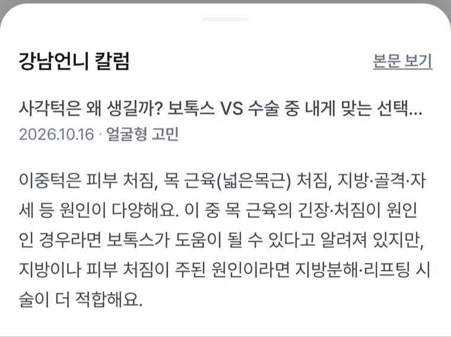
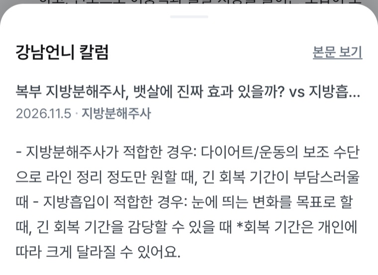

질문
사용자는 IRP에서 돈을 뺄 수 있는지, 어떤 조건이면 되는지 알고 싶어 합니다.
IRP도 중도인출이 가능한가요?
힐링페이퍼 인턴 지원자 오서연 Portfolio
연금 상담 Agent에서 답이 검색 92위로 밀린 문제를 원문과 대조해 고쳤고, 같은 실패를 잡는 평가셋과 회귀 검사로 남겼습니다.
대표 사례
사용자는 IRP에서 돈을 뺄 수 있는지, 어떤 조건이면 되는지 알고 싶어 합니다.
IRP도 중도인출이 가능한가요?
당시 410개 청크 중 답이 든 청크가 92위에 있었습니다. Agent는 상위 3~5개 청크만 참고해서 답이 컨텍스트에 들어가지 못했습니다.
| 순위 | BM25 점수 | 청크 | 내용 |
|---|---|---|---|
| 1위 | 51.0 | 일정 조건을 충족하면 중도인출이 가능합니다. [표] IRP 중도인출 사유 | 답 없음 |
| 2위 | 41.1 | ■질문 리스트 | 목차 |
| 92위 | 7.4 | 무주택자 주택구입 / 임차보증금 / 6개월 요양 … | 실제 답 |
조건 목록이 질문과 분리돼 92위 청크 본문에는 IRP도 중도인출도 없었습니다. 검색 가중치 조정보다 질문과 조건을 같은 청크에 보존하는 수정을 우선했습니다.
길이 기준 규칙을 완결된 업무 단위로 바꿨습니다. LLM은 원문을 고쳐 쓰지 않고 시작 앵커와 제목만 반환하고, Python이 원문에서 잘라 냅니다.
○ 개인형 퇴직연금제도(IRP)도 중도인출이 가능한가요?
- 일정 조건을 충족하면 중도인출이 가능합니다.
중도인출 사유 1. 무주택자인 가입자가 본인 명의로 주택을 구입하는 경우 …
제출본 인덱스에서 같은 질문을 다시 검색해 사유 청크의 BM25 순위를 확인했습니다. 두 기록은 인덱스가 달라 청킹만의 효과로 나눠 보지 않습니다.
별도의 비교용 질문 8개 표본에서는 기존 규칙과 새 방식의 Hit@5가 5/8, 7/8이었습니다.
■질문 리스트는 청크로 나오지 않는다증거
금융 분야 팀원이 쓴 질문에 답변 가능 여부, 근거, 필수 키워드, 금지 표현을 담는 16컬럼 규격을 제가 정의하고 엔진에 연결했습니다.
검색, 안전 판정, 형식, 폴백, 지연을 건별로 남겼습니다. 이 기록은 답변의 정오는 채점하지 않습니다.
{"qid": "2", "ms": 1619, "err": "",
"safety": "", "fallback": "",
"blocks": true, "raw_label": false,
"retries": 1, "rejects": 0,
"ctx_docs": 5}숫자 대조에 쓴 단위 변환이 0.7억을 7억으로 읽어서 근거에 없는 값이 통과할 수 있었습니다. 고친 뒤 기대값이 나오는지와 잘못된 7억 확장이 사라졌는지를 함께 검사했습니다.
# 처음 짠 정규식
0.7억 → 700000000 (실제 70000000)
# 당시 회귀 검사 (일부 생략)
for s, want in [("0.7억", "70000000"), ("7억 5천만", "750000000"), …]:
e = expand_units(flat(s))
t(f"'{s}' → {want} 로도 찾힌다", want in e, e)
t("★ 0.7억을 7억으로 부풀리지 않는다",
"700000000" not in expand_units(flat("0.7억")))자동 검사로는 내용이 틀렸는지 알 수 없어, 팀원이 원문과 청크를 나란히 보고 판정을 남기는 도구를 만들었습니다. 판정 369건을 모았고 35건에 문제가 표시됐습니다. ISA 재가입 유의사항이 떨어져 검색된다는 지적을 받아 분할 방식을 고쳤습니다.

모델 생성 경로 436건 중 19건을 HTTP429 13건, 시간 부족 3건, 기타 API 실패 2건, 검증 반복 실패 1건으로 나눴습니다.
자가점검 모듈이 중간에 죽어도 앞부분 출력만 모아 정상으로 표시되는 문제를 찾아, 종료 코드와 자체 집계를 함께 확인하도록 고쳤습니다.
채점 대상 419문항에서 근거 문서 Hit@5 93.8%, Hit@1 74.0%, MRR 0.822입니다. 답변 정확도가 아닌 검색 지표입니다.
직접 써 본 기록
언니 AI에 가족 결혼식까지 한 달이 남았고 볼살이 적은데 이중턱이 고민이라고 물었습니다. 답변은 회복 기간으로 시술을 나누고 볼패임 위험까지 짚어 제 상황을 잘 반영했습니다. 인용을 열어 보며 판정 기준을 정리했습니다.
| 평가 항목 | 확인할 수 있는 범위 | 판정을 유보할 범위 |
|---|---|---|
| 문장별 근거 충실성 | 출처 본문이 답변의 주장과 조건을 뒷받침하는가 | 의학적 사실 자체의 정확성 |
| 대상 차이 표시 | 출처와 질문의 부위나 상황이 다르면 답변이 밝혔는가 | 다른 부위에 임상적으로 적용되는가 |
| 단서 보존 | 개인차와 가능성 표현이 빠지거나 강해지지 않았는가 | 그 시술이 이 사용자에게 적절한가 |
판정 상태는 통과, 실패, 근거 부족, 전문가 검토 필요의 네 가지로 둡니다. 지침만으로 정할 수 없는 사례는 판정을 보류하고 기준을 보완합니다.
이중턱은 피부 처짐, 목 근육(넓은목근) 처짐, 지방·골격·자세 등 원인이 다양해요.
이중턱은 피부 처짐, 목 근육(넓은목근) 처짐, 지방·골격·자세 등 원인이 다양해요.
출처 목록에서 제목만 보고 잘못 고른 출처로 의심했습니다. 본문을 열어 보니 같은 구절이 있어 판단을 바꿨습니다.

목 근육의 긴장·처짐이 원인이면 보톡스가 도움이 될 수 있고, 지방이나 피부 처짐이 주된 원인이면 지방분해·리프팅 시술이 더 적합해요.
이 중 목 근육의 긴장·처짐이 원인인 경우라면 보톡스가 도움이 될 수 있다고 알려져 있지만, 지방이나 피부 처짐이 주된 원인이라면 지방분해·리프팅 시술이 더 적합해요.
앞 문장에 연결된 인용 칼럼에서 유사 구절을 찾아 대조했습니다. 이 문장 자체의 인용 연결은 확인하지 못했습니다.
될 수 있은 유지됐습니다. 알려져 있다의 생략을 단서 손실로 볼지는 현재 지침만으로 확정하기 어렵습니다.다이어트·운동의 보조 수단으로 라인 정리 정도만 원할 때, 긴 회복 기간이 부담스러울 때 적합하다고 해요.
지방분해주사가 적합한 경우: 다이어트/운동의 보조 수단으로 라인 정리 정도만 원할 때, 긴 회복 기간이 부담스러울 때

다른 경험
같은 가상 규정으로 모델 4개를 깨진 링크, 필수 섹션 누락, 원본에 없는 내용의 건수로 비교했습니다. 같은 지시를 다시 실행해도 citation 형식이 달라져서 정답이 하나인 형식 검사는 스크립트로, 의미 판단은 LLM으로 나누자고 제안했습니다. 구조는 팀 방향으로 채택됐고 이후 도입은 보류됐습니다.
다음에 검증하고 싶은 질문